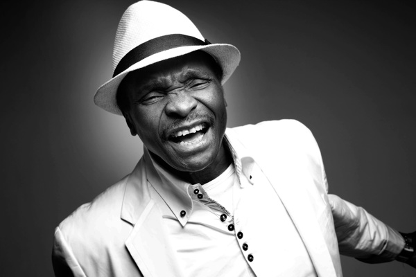
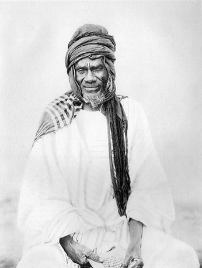

Mande is a term that has been used to identify the culture that embraces the western third of Africa's great northern savanna and coastal forests.
In a narrow sense, "Mande" identifies a geographic homeland, Burkina Faso, Mali, Senegal, the Gambia, Guinea, Guinea-Bissau, Sierra Leone, Liberia, and Ivory Coast.
The Mali Empire was the source of the Mande diaspora; therefore, in a broad sense, "Mande" refers to the areas of these countries that are occupied by Mande language speakers.
Malinke
The Malinke are heirs to the great Mali Empire, a medieval merchant empire that flourished from the thirteenth to the sixteenth century and greatly influenced the history of western Africa. Malinke territories in the northern region of Africa were brought under Muslim control in the eleventh century. The renowned city of Islamic teaching, Timbuctu, was also part of the vast and prosperous Mali Empire. The empire declined in the fifteenth century and was gradually absorbed by the Songhai Kingdom, which extended to the seventeenth century.
Read more: http://www.everyculture.com/wc/Japan-to-Mali/Malinke.html#ixzz3Iw1X68fB
Bambara
Bambara is a language/dialect of the Manding language cluster, a cluster of languages whose ethnic-speakers generally trace their cultural history to the ancient city of Manding, where modern-day Kita, Mali now exists.[3] Bambara is classified as part of the larger, very broad Mandé group. Dialects of Manding are generally considered (among native speakers) to be mutually intelligible – dependent on exposure or familiarity with dialects between speakers – and spoken by approximately 20 million people in the countries Burkina Faso, Senegal, Guinea Bissau, Guinea, Liberia, Ivory Coast and the Gambia.
Djula
The Dyula (Dioula or Juula) are a Mande ethnic group inhabiting several West African countries, including the Mali, Cote d'Ivoire, Ghana, Burkina Faso, and Guinea-Bissau.
Characterized as a highly successful merchant caste, Dyula migrants began establishing trading communities across the region in the fourteenth century. Since business was often conducted under non-Muslim rulers, the Dyula developed a set of theological principles for Muslim minorities in non-Muslim societies. Their unique contribution of long-distance commerce, Islamic scholarship and religious tolerance were significant factors to the peaceful expansion of Islam in West Africa.
Salif Keita
read more

Mory Kante
read more
Sundiata Keita
read more
Kandia Kouyate
read more
Mansa Musa
read more

Samory Toure
read more
Iya Traore
read more
Aicha Kone
read more
Sekoumba Bambino
read more
Alpha Blondy
read more
Yaya Toure
read more
Tiken Jah
read more
Salif Keita
Salif Keïta is an afro-pop singer-songwriter from Mali. He is unique not only because of his reputation as the "Golden Voice of Africa" but because he has albinism and is a direct descendant of the founder of the Mali Empire, Sundiata Keita. WIKIPEDIA
Mory Kante
Mory Kanté is a vocalist and player of the kora harp. He was born into one of Guinea's best known families of griot musicians. WIKIPEDIA
Sundia Keita
Sundiata Keita was a puissant prince and founder of the Mali Empire, the renowned hero celebrated by the Mandinka people WIKIPEDIA
Kandia Kouyate
Kandia Kouyaté is a Malian jelimuso and kora player; she has earned the prestigious title of ngara, and is sometimes called La dangereuse and La grande vedette malienne WIKIPEDIA
Mansa Musa
Musa Musa was the tenth Mansa, which translates as "King of Kings" or "Emperor", of the wealthy Mali Empire WIKIPEDIA
Samory Toure
Samori Ture was the founder of the Wassoulou Empire, an Islamic state in present-day Guinea that resisted French colonial rule in West Africa from 1882 until Ture's capture in 1898
WIKIPEDIA
Iya Traore
Born in Guinea 1986 , his passion for football began when he was a young child playing on his local streets. He then moved to France in 2000 and after being dropped from Paris St Germain, took to performing for crowds all over the country.
Web link
Aicha Kone
Born in 1957 Cote Ivoire , she started with Orchestra of the Ivorian Radio and Television where she was hired as a singer. click link below for more info
WIKIPEDIA
Sekouba Bambino
Sekouba "Bambino" is the stage name of Sekouba Diabaté, a singer and musician born in Guinea, West Africa in 1964. Bambino was born and raised in the village of Kintinya, some 25 kilometers from the town of Siguiri, close to the border with Mali
WIKIPEDIA
Alpha Blondy
(January 1, 1953)[1] born Seydou Koné in Dimbokro, Côte d'Ivoire (Ivory Coast) is a reggae singer and international recording artist. Many of his songs are politically motivated, and are mainly sung in his native language of Dioula, French and in English, though he occasionally uses other languages, for example, Arabic or Hebrew
WIKIPEDIA
Yaya Toure
Gnégnéri Yaya Touré (born 13 May 1983), known as Yaya Touré, is an Ivorian professional footballer who plays as a midfielder for English club Manchester City and the Ivory Coast national team.
WIKIPEDIA
Tiken Jah Fakoly
Moussa Doumbia, known as Tiken Jah Fakoly, was born on June 23, 1968 in Odienné, north-western Côte d'Ivoire. He discovered reggae at an early age, assembling his first group, Djelys, in 1987. He became well-known at a regional level, but would soon ascend to national recognition.
WIKIPEDIA